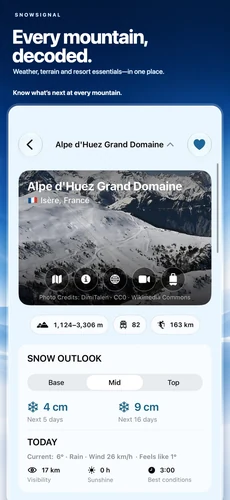
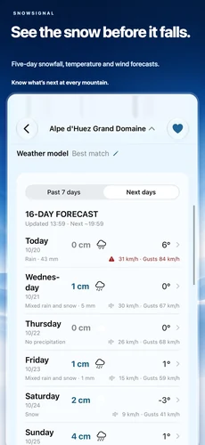
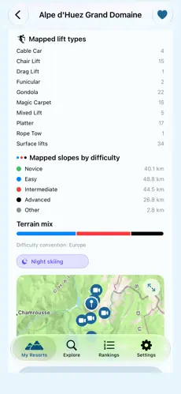
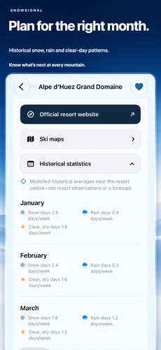

Mountain-first forecasts
Snow, temperature, wind, and rain at Base, Middle, and Top.
Worldwide ski planning
SnowSignal brings ski-specific mountain forecasts, clear elevation views, and worldwide resort discovery together—without turning the mountain into a generic weather dashboard.
Now available for iPhone
A look at resort forecasts, mountain terrain and historical statistics in the current App Store release.




Built for the question skiers ask
Search worldwide resorts, compare the forecast, and decide where to ski.
Snow, temperature, wind, and rain at Base, Middle, and Top.
Start with five days free. Premium looks up to sixteen days ahead.
Find ski resorts and connected ski areas worldwide.
Rank worldwide for free, compare two favorites, and filter by the facts that matter.
Save, reorder, and compare the mountains you care about.
See forecasts, historical patterns, terrain, lifts, maps, and official links.
Best Match is automatic. Premium can choose a supported regional or global weather model.
See modelled averages for snow, rain, and clear dry days near the resort centre.
Country rankings, all-saved comparisons, unlimited favorites, model choice, and up to sixteen days.
Explore the terrain
Use mapped terrain and official resort links alongside the forecast. Mapped figures may differ from official totals.
Explore Apple Maps terrain, then open the original attributed OpenSkiMap website near the resort.
Open available Skimap.org archive links on their original website. Archive maps may be old and are not guaranteed current or official.
Optional live resort reports and webcams remain unavailable for public release while provider permissions are pending.
Made for worldwide ski travel
SnowSignal localizes resort discovery, forecasts, weather terms, units, country names, rankings, and Premium information. Hebrew and Arabic include right-to-left layouts.
Data principles
Forecasts are cached to reduce provider load and carry their update time. Missing, stale, unsupported, or uncertain information is hidden or clearly labeled—never invented.
SnowSignal for iPhone
Download the iPhone app to explore ski resorts, compare mountain forecasts and plan your next snow day. Free to download with optional Premium subscriptions.
Download on the App Store Contact support